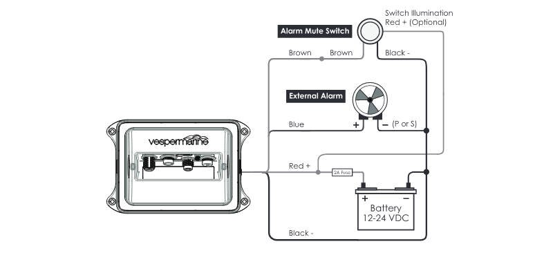

ais installation
2018.05.04
Whangarei, New Zealand.
Click below dates for more recent updates:
 and antenna splitter(black box, center) tucked behind the breaker panel")
If we hope to get to Japan safely, we need ais.
Our first idea, was to DIY this with a Raspberry Pi Daisy hat.

This Raspberry Pi project turned out to be too big of a leap. We had little Pi experience then. We also needed more then the dAISy hat could offer, more reliability, and range. We also wanted to transmit our position, and it's why in the end we opted for a Vesper XB-8000 transponder.
We never thought we'd buy this. Already then, we were scared of all the big spendings we'd been doing, but we figured it was well worth the price. The unit itself was costly, made worse by the fact that you need to buy a splitter to connect it to the VHF antenna. A splitter removes the need for a separate VHF antenna for an AIS receiver or transponder and allows a single antenna to be shared with a VHF radio. The antenna splitter also provides signal gain, improving AIS reception and range. The unit we got, has a low-noise amplifier, it helps to get a good signal on smaller lower power devices that are transmitting out there.
We walked out of there, wide-eyed, half-regretting. We both took on some extra work to help us cover these costs, because ouch.
Installing the unit and splitter wasn't too tough. We routed the wires from the back rail of the boat, inside the radar post, through the cockpit locker, under the flooring, through the ceiling, and down over to the port side breaker panels. Easy? Not really. Pino has a lot of extra wiring that lead to nothing, junk that was left hanging in the boat by previous owners and that we haven't bothered to remove because of how shitty a job it is. There's still old GPS, SSB, modem wires running through here. We set up the antenna outside, on the rail, and the unit inside the breaker panel, stuck to the back wall with the splitter.
External Alarm/Buzzer connects Positive (+) to BLUE wire of XB-8000
External alarm connected brown (-) to brown of XB-8000
External Alarm/Buzzer Negative (-) to DC Negative / Ground
WatchMate External Alarm and Mute Switch. The Vesper XB-8000 unit comes with an external alarm and a switch to mute it.
External alarm. The alarm has a set of vanes on its top face, there to reduce the alarm volume. To lower the volume of the alarm, rotate the vane to close the openings. It is possible to configure the sound that the alarm will make when a ship is on a collision course, there are two options: pulse or steady sound. To configure the unit, connect either P or S to DC negative (you will see that there are two posts). Do not connect both. Choose P for pulse or S for steady sound. We had it configured to S, and found it too annoying and had to switch it to P.

After installing it, and spending some time at sea with it, we were happy to have it. One night we had forty knots at our backs, generating big seas. A ship lay in front of us, too close. Our eyes couldn't see them in the night. We were running downwind and could not manoeuvre so well, and the other ship was a power boat, going real slow. We were surfing at 8 knots, we'd catch up in no time. I saw them on AIS, saw their name, gave them a call to warn them of our passing, we weren't going to run into them, but we'd pass awful close. They told us they were running under a headsail, and that they too could not manoeuvre too well, but were happy to know we knew they were there.
That peace of mind, of them knowing we're there, and being clear on our intentions, made it worth it.
Take away: We will always opt for the DIY option first, even it a lot of times it we fail at it. We are still, happy to try though. The DAISy hat may be a good option for a lot of people, we still have it aboard, and will continue to play with it.
AIS 1200$
Splitter 400$
2019.02.28
Mid-ocean between Majuro and Ogasawara.
AIS was useful in spotting fishing vessels and their nets. We crossed one with buoys, all displaying on our AIS. We weren't sure if it was safe to go in-between, so we went round (and it took a long, long while).

2019.04.03
Shizuoka, Japan.
Our AIS system got a true test while sailing in Japanese waters. Coming into Shizuoka, there was a lot of traffic, all converging towards Tokyo. AIS proved invaluable, as they could see us too. Many ships altered course to go around us! We did not expect that.
A downside of AIS that we discovered, was the loss of privacy. Coming into a harbor with AIS, authorities on land can identify you, and track you wherever you go. In Japan, they kept an eye on us always, which we disliked. Any movement resulted in them coming to see us, asking about our intentions.

2023.01.04
Victoria, BC, Canada.
This year we had took on an electrical refit of Pino, and so we shifted items around in the boat. The AIS system and antenna splitter was moved to another bulkhead, nested in the ceiling in the quarter berth. This helped to free up space behind the breaker panels. It wasn't possible to install the transponder and splitter there before because there were too many old wires cluttering the walls, making it impossible to run new wires through. Now, we cleared away most of them and there is now plenty of room.